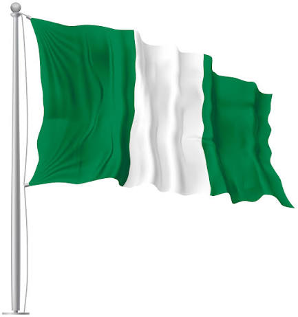

Somto Unachukwu|WDD 130
My name is Somto
unachukwu and I am fom Amichi, Nigeria. I enjoy reading,
researching, watching football and listening to Godly music.
I am excited to learn about web development and
I hope to learn a lot in this course.
development
Nigeria

Nigeria is a country in West Africa that truly pulses with life; as the most populous
nation on the
continent, it’s a vibrant tapestry woven from over 250 distinct ethnic groups. Looking
back, it held
the title of one of Africa’s fastest-growing economies as recently as 2015, but sadly,
years of poor
leadership have taken a heavy toll, leaving the economy in a fragile state.
Beyond its economic struggles, Despite the many challenges, there is
a palpable
sense of resolve in the air as the country looks toward the upcoming 2027 elections,
there is a
strong, collective intent among Nigerians to push for the meaningful change they want to
see for
their future.